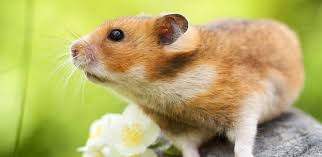
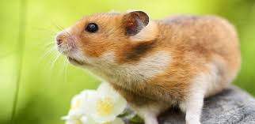

i own a dog named "oso" we adopted him from the animal shelter.
here's a list of dog breeds

i like cats, mainly the calm ones that don't break everything in their eyesight.
fun facts about cats
i like birds, i like their beautiful colors and their calming chirps.
cool facts about parrots

A tank of fish is very soothing to look at, especialy when you own a lot of species
cool facts about fish 

hamsters are cute little animals, i love to see them play in their little wheel of theirs.
Link for useful hamster facts